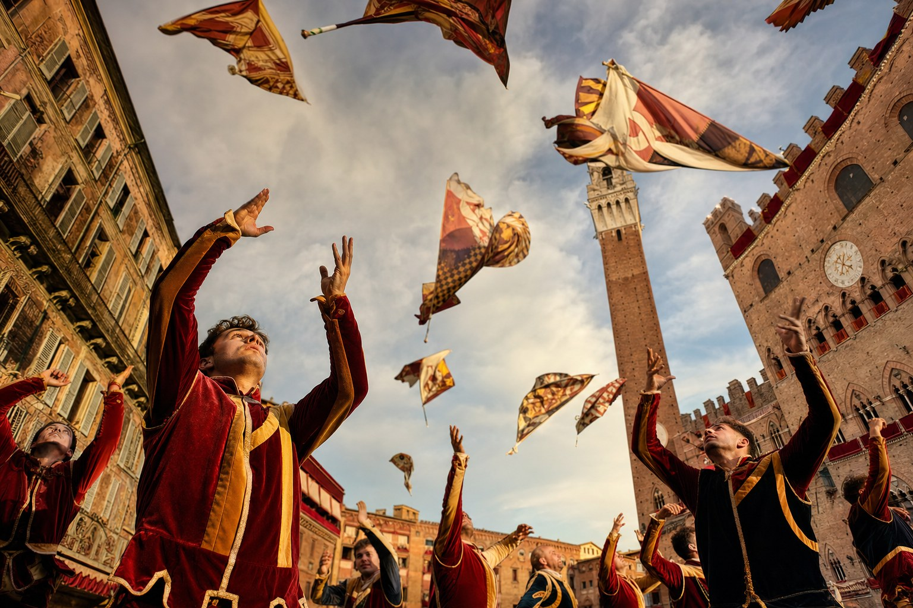

Cultural event · Il Carnevale · February · ten days before Lent
For ten days every winter, Venice returns to the eighteenth century. The masks come out, the palazzi open their piani nobili, the gondolas fill the small canals, and the whole city agrees, for a brief theatrical moment, that identity itself can be lifted off and set aside. Nowhere on earth performs history quite like this.
A national holiday is a country's most concentrated form of self-portrait. To understand Frittelle at a Sienese table, the smoke trails of the Frecce Tricolori over Rome, or the mask of the bautà in a Venetian palazzo, is to understand the Italian idea of belonging.
The Italian calendar is not a schedule; it is a liturgy. Every region has its own saints' days, harvests, harbour festivals, chestnut fairs, olive-oil pressings, sagre and processions. Layered on top, only three or four dates belong to the entire peninsula at once. This is one of them.
When Club Italia builds a cultural unit around a date, the point is never trivia. Italy is a country where the words tradizione and identità still carry weight, where the shape of an event teaches the shape of a language, and where knowing why an event happens, and how it is celebrated, is inseparable from speaking Italian well.
Our teachers do not lecture on holidays. They walk into their kitchens the morning after, phones on, and describe them. The learner hears the exact register, the exact vocabulary, the emotional colour of the day, spoken, unscripted, by an Italian who lived it the day before.
What follows is the full editorial file: the history, the traditions, the recipe, the vocabulary and the live broadcast we will run this year. Save it. Come back to it. Bring it into class.
"A Venezia si vive dietro una maschera. È l'unico modo di essere davvero se stessi."
Attributed to Casanova, Histoire de ma vie
Every Italian tradition has a paper trail. Here is the one for this event, as documented by the Italian state archives and the standard scholarly reference works.
A charter of the doge Vitale Falier mentions a period of public revels in the days before Lent. The lagoon city, already the wealthiest maritime republic in Europe, is beginning to institutionalise its most famous festival.
The Great Council issues a decree forbidding masked citizens from throwing perfumed eggs at ladies. The record is our first legal proof that Venice was already, by the thirteenth century, a city that lived behind a face.
Venice grants a formal statute to the maschereri, the mask-makers, who by then have their own workshops around San Cassiano. Papier-mâché, gesso, gold leaf. The craft has changed remarkably little.
Bonaparte's troops enter Venice, the Serenissima falls, and the Austrian and later Italian authorities suppress Carnevale as decadent and politically dangerous. For nearly two centuries the festival vanishes.
A group of Venetian citizens, cultural societies and the municipality restage a full Carnevale in the lagoon. It draws thirty thousand visitors in year one, three million within a decade, and has run every year since.
The Carnevale is inscribed in the Italian intangible heritage register and studied at university level in the Ca' Foscari department of art history. Club Italia's Venetian units use its costumes as a live grammar of eighteenth-century Italian.
Opening Sunday: a young woman, chosen the previous year as Maria del Carnevale, is lowered on a wire from the top of the Campanile of San Marco down to the doge's balcony. The whole piazza looks up. The tradition dates from a Turkish acrobat's stunt of 1548.
Six historical masks recur: the bautà (white male, worn with tricorno and cape), the moretta (silent black velvet held by a mouth-button, for women), the medico della peste (long-beaked plague doctor), the gnaga (cat), the volto and the Colombina. Each has its own social history and its own rules.
The great palazzi along the Grand Canal, Ca' Vendramin, Palazzo Pisani-Moretta, Ca' Zenobio, host baroque balls where the entire audience is required to arrive in period costume. Tickets run into the thousands of euros. The candlelight is real.
A costumed procession of twelve young Venetian women, elected by neighbourhood, in medieval dress, from San Pietro di Castello to San Marco. Commemorates a tenth-century rescue of twelve brides kidnapped by Istrian pirates.
Every pastry window in the city fills with frittelle, small round doughnuts stuffed with cream, zabaglione or raisins, and galani, thin fried ribbons dusted with icing sugar. The city eats them for breakfast for ten straight days.
On Shrove Tuesday, a fireworks display over the Bacino, the lowering of the giant Carnevale banner, and the ritual burning of a small paper effigy. Lent begins the next morning. The masks are put away for another year.
"Venezia, la più bella maschera del Mediterraneo."
Ernest Hemingway, Across the River and into the Trees
Club Italia broadcasts a live cultural window from the piazza on the day itself, hosted by one of our resident teachers, with commentary in slow Italian for learners at A1 and above, and a follow-up debrief lesson the following week.
Members of the Club Italia community receive the calendar invitation automatically. Non-members can register a single-event pass through our advisors.
The classic Carnevale doughnut, made in Venetian homes and pastry shops for at least three hundred years. Recipe adapted from the eighteenth-century cookbook of Domenico Felici, Venetian pastry chef.
Warm the milk to blood heat and dissolve the yeast with a spoon of the sugar.
Combine flour, remaining sugar, eggs, melted butter, lemon zest and salt in a bowl.
Pour in the milk.
Beat to a soft, sticky dough.
Fold in the drained raisins.
Cover and prove for two hours until doubled.
Heat the oil to one hundred and seventy degrees.
Drop spoonfuls of dough into the hot oil in batches of six.
Cook two minutes each side until deep gold.
Drain on paper.
Roll in sugar while still warm.
Eat within the hour, standing up, ideally on a bridge over a Venetian canal.
A ready-to-print glossary of the twelve to fifteen Italian words a learner will hear most on the day.
Every Club Italia course includes a cultural events calendar, live broadcasts from the piazza on the day itself, follow-up debrief lessons in slow Italian, and a recorded archive open to all learners for life.